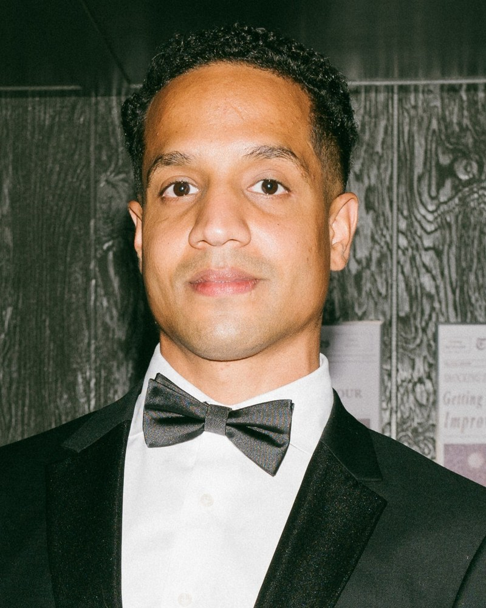

I'm a physician-trained, independent clinical trial recruiter. I run the full chart-to-consent pipeline — EMR review, pre-screening, and qualified patient referrals — for research sites across multiple therapeutic areas.
EMR mining, pre-screening calls, and outreach pull CRCs away from active visits. Recruitment slows. Sponsors notice.
Mass-market campaigns flood phone lines with unqualified leads. Ten hours of screening for one consent isn't a strategy — it's attrition.
Sponsors track enrollment by site. One under-performing study can quietly remove you from the next protocol's site selection list.
The bottleneck in site recruitment isn't ad spend — it's chart review. Mining your EMR for protocol-eligible patients, then deeply reviewing each chart against I/E criteria, takes clinical judgment most recruiters don't have. As an MBBS-trained recruiter, I run that pipeline end-to-end: I find the patients hiding in your charts, screen them against the protocol the way your monitor would, and hand them to your CRC team consent-ready.
I work directly inside your EMR or on de-identified extracts to surface protocol-eligible patients. Every flagged chart gets a deep clinical read — not just keyword matching — against the full I/E criteria, including labs, comorbidities, and washout windows.
For external recruitment, every referral is screened against your protocol's I/E criteria before reaching your team. You receive completed pre-screening forms with chart-level rationale — not raw leads.
Recruitment messaging built around your protocol's actual language — phase, indication, key endpoints, visit burden. Patients arrive informed and self-qualified.
Studies behind on screening targets get a focused push combining chart review and external outreach — short-term engagements aimed at closing the gap before the next sponsor check-in.
For sites building internal capability: chart review workflows, EMR query templates, screening scripts, and outreach playbooks tailored to your therapeutic mix.

Hi — I'm an independent clinical trial recruiter. Patient Pioneer is a one-person practice, by design.
When you work with me, you work with me — not an account manager, not a junior coordinator. Every referral, every weekly report, every protocol read-through goes through the same person who answered your first email.
Five years of clinical trial recruitment across multiple therapeutic areas, plus an MBBS and ACRP-CP certification. The clinical training matters: recruiters who don't read protocols miss exclusions; recruiters who don't know enrollment timelines miss screen-fail patterns. I read your protocol the way your monitor does.
Interventional and observational protocols across late-stage development.
I integrate with your CRC team, your EMR workflow, and your sponsor cadence.
30-minute call. I review your protocol, current enrollment status, and gaps. No fee, no commitment.
A clear scope: target referrals, timeline, channels, and pricing. You see the plan before anything starts.
Outreach launches. Pre-screened candidates are routed to your CRC team with completed intake forms.
Weekly funnel reports. Channel performance reviewed. Targeting refined until enrollment closes.
Send a short note about your study — phase, indication, target enrollment, and current gap. You'll get a response within one business day.
hello@patientpioneer.com